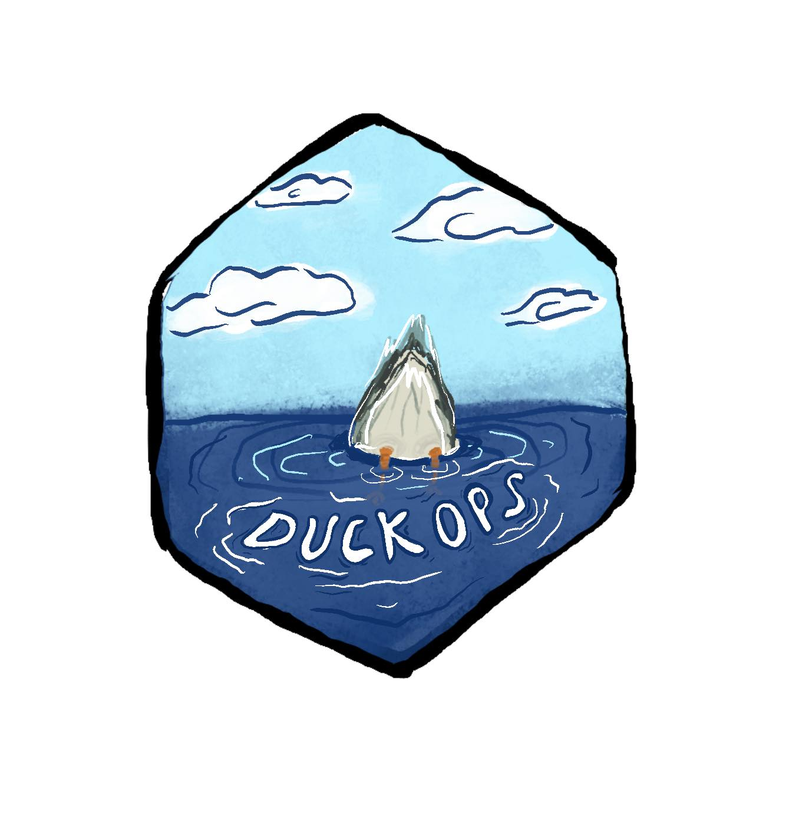

import duckdb
duckdb.execute("""
SELECT concat('a', 'b', 'c')
""").df()| concat('a', 'b', 'c') | |
|---|---|
| 0 | abc |

The duckops package is an API for duckdb, which allows you to call duckdb functions directly from python. It also supports more advanced query generation using siuba. Importantly, siuba is just one implementation. duckops is designed to be extended!
duckops is 🔬highly experimental🔬. Use it to explore the beautiful dream of composable duckdb functions. Tell us what you want it to do. Expect it to change!
duckdb is an incredibly powerful tool. It can read from many places (e.g. cloud buckets), and even analyze pandas or polars DataFrames.
But in python you probably end up writing SQL queries inside strings:
With duckops functions like concat are importable:
This makes them easy to find, provide documentation, and use type hints.
duckops can be installed using pip.
See siuba.org for building queries.
from duckops.helpers import to_duckdb
from duckops.all import mean, stddev
from siuba import _, select, group_by, summarize, across, Fx
from siuba.data import penguins
expr_measures = _.startswith("bill")
(
to_duckdb(penguins, "penguins")
>> select(_.species, _.island, expr_measures)
>> group_by(_.species, _.island)
>> summarize(across(expr_measures, {"mean": mean(Fx), "std": stddev(Fx)}))
)/Users/machow/.virtualenvs/duckops/lib/python3.10/site-packages/duckdb_engine/__init__.py:160: DuckDBEngineWarning: duckdb-engine doesn't yet support reflection on indices
warnings.warn(# Source: lazy query # DB Conn: Engine(duckdb:///:memory:) # Preview:
| species | island | bill_length_mm_mean | bill_length_mm_std | bill_depth_mm_mean | bill_depth_mm_std | |
|---|---|---|---|---|---|---|
| 0 | Adelie | Torgersen | 38.950980 | 3.025318 | 18.429412 | 1.339447 |
| 1 | Adelie | Biscoe | 38.975000 | 2.480916 | 18.370455 | 1.188820 |
| 2 | Adelie | Dream | 38.501786 | 2.465359 | 18.251786 | 1.133617 |
| 3 | Gentoo | Biscoe | 47.504878 | 3.081857 | 14.982114 | 0.981220 |
| 4 | Chinstrap | Dream | 48.833824 | 3.339256 | 18.420588 | 1.135395 |
# .. may have more rows
One big challenge of functions is that calling one function on the result of another can create a hard-to-read sandwich of code.
from duckops.all import list_aggr, string_split, upper
list_aggr(
string_split(
upper("Make it so"),
" "
),
"string_agg",
"."
)'MAKE.IT.SO'siuba addresses this by enabling function pipes, using the >> operator.
# setup ----
from duckops.core.data_style import IsConcrete, data_style
class IsConcreteRad(IsConcrete): ...
@data_style.register
def _ds_rad(arg: RadSeries): return IsConcreteRad()
# implementation ----
from duckops.str import contains
@contains.register
def _contains_rad(codata: IsConcreteRad, data, search_string):
return [search_string in x for x in data.d]